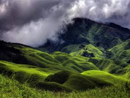
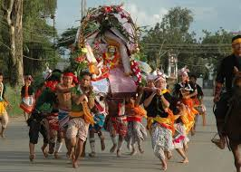
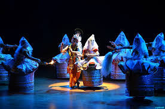
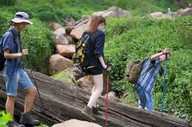
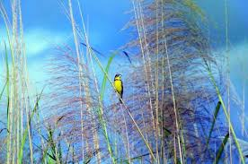

CITIES AND PLACES
Imphal
- Kangla Fort: An ancient fort and the former seat of the Manipur Kingdom, offering rich history and beautiful surroundings.
- Loktak Lake: The largest freshwater lake in northeastern India, famous for its floating phumdis and scenic views.
- Imphal War Cemetery: A well-maintained cemetery honoring soldiers who died in World War II battles in Manipur.

- Shree Govindajee Temple: A famous Vaishnavite temple dedicated to Lord Krishna, known for its serene atmosphere.
- INA Memorial Complex: A memorial dedicated to the Indian National Army and its contribution to India's independence movement.
- Manipur State Museum: A museum showcasing artifacts related to the art, culture, and history of Manipur.
Thoubal
- Ikop Lake: A serene and picturesque lake, ideal for nature lovers and bird watchers.
- Thoubal River: A beautiful river flowing through the city, offering scenic views and opportunities for boating.
- Waithou Lake: Another tranquil lake near Thoubal, popular for picnics and photography.

- Thoubal Bazar: The main market of the city, offering local handicrafts, food items, and cultural experiences.
- Khongjom War Memorial: A historic site dedicated to the Manipuri warriors who fought against British forces in the Anglo-Manipur War.
- Loukoipat Ecological Park: A park surrounding a small lake, offering visitors a peaceful retreat into nature.
Bishnupur
- Keibul Lamjao National Park: The only floating national park in the world, home to the endangered Sangai deer and located on Loktak Lake.
- Loktak Lake: The largest freshwater lake in northeastern India, famous for its phumdis (floating islands) and scenic beauty.
- INA Memorial Complex: A museum and memorial dedicated to the Indian National Army and its role in India's freedom struggle.

- Loukoipat Ecological Park: A serene park offering beautiful views, perfect for nature lovers and families.
- Sadu Chiru Waterfall: A stunning three-tiered waterfall located in a tranquil setting, ideal for trekking and picnics.
- Bishnupur Temples: A group of ancient temples that showcase traditional Manipuri architecture and craftsmanship.
Ukhrul
- Shirui Kashong Peak: A famous peak known for the rare Shirui Lily, offering breathtaking views of the surrounding landscapes.
- Khangkhui Cave: A limestone cave rich in historical significance, featuring impressive stalactites and stalagmites.
- Hundung Mangva Cave: Another ancient cave, popular for trekking and exploring the natural formations.

- Phangrei: A serene hilltop known for its scenic beauty, perfect for picnics and relaxing amidst nature.
- Ango Ching: A dense forest reserve rich in biodiversity, offering trekking opportunities and a peaceful atmosphere.
- Khayang Peak: One of the highest peaks in Ukhrul, offering panoramic views of the valleys and distant mountains.
Churachandpur
- Tuinem Village: A beautiful village surrounded by hills, known for its scenic beauty and peaceful environment.
- Tipaimukh: A picturesque area with stunning landscapes and rich biodiversity, located near the Bangladesh border.
- Ngaloi Falls: A breathtaking waterfall set in lush greenery, perfect for nature lovers and trekkers.

- Khuga Dam: A multipurpose project offering beautiful views, popular for picnics and sightseeing.
- Tonglon Cave: A mysterious cave with historical significance, believed to have been a shelter during ancient times.
- Siallum Village: A peaceful village known for its cultural heritage and traditional customs.
Other Attractions
Dzukou Valley, Manipur
- Dzukou Valley: A breathtaking valley known for its rolling hills, lush greenery, and vibrant seasonal flowers, offering serene trekking trails.
- Shirui Lily: Found only in this region, the rare and beautiful Shirui Lily blooms in the Dzukou Valley during the summer months, attracting nature lovers and photographers.
- Japfu Peak: The second-highest peak in Nagaland, offering panoramic views of Dzukou Valley and a popular spot for trekking enthusiasts.

- Khonoma Village: A green village known for its rich history and as a model of sustainable living, located near Dzukou Valley.
- Kohima War Cemetery: A historic site honoring soldiers who lost their lives in the Battle of Kohima during World War II, situated near the valley.
- Dzuleke Village: A peaceful, remote village known for its scenic beauty and eco-tourism initiatives, perfect for nature lovers and trekkers.
Khongjom War Memorial
- Khongjom War Memorial: A significant memorial dedicated to the soldiers who fought in the Anglo-Manipuri War of 1891. It commemorates the valor and sacrifices of those who laid down their lives for the freedom of Manipur.

- Nearby Attractions: The memorial is surrounded by scenic views and offers a glimpse into the rich history of Manipur.
- Visitor Center: Provides information about the memorial and the history of the Anglo-Manipuri War.
Cultural and Festivals
Lai Haraoba
- Overview: Lai Haraoba is a traditional festival celebrated by the Meitei community of Manipur, honoring the gods and spirits of the land.
- Significance: The festival symbolizes the cultural heritage of Manipur and showcases the rich traditions, rituals, and dances of the region.
- Duration: It typically lasts for several days, with various activities, performances, and ceremonies taking place throughout the festival.

- Cultural Performances: The festival features traditional dances, music, and rituals performed by local artists, showcasing the vibrant culture of Manipur.
- Community Participation: People from various communities participate, fostering unity and preserving cultural traditions.
- Local Cuisine: Traditional Manipuri food is an essential part of the festival, offering visitors a taste of the region's culinary delights.
Ras Lila
- Overview: Ras Lila is a traditional dance-drama that depicts the divine love between Lord Krishna and Radha, celebrated in Manipur.
- Significance: This performance is not only a dance but a spiritual expression of devotion, showcasing the rich cultural heritage of Manipur.
- Performance: The dance features intricate movements, vibrant costumes, and melodious music, often performed during festivals and special occasions.

- Festivals: Ras Lila is prominently performed during festivals like Yaoshang and the Lai Haraoba festival, drawing crowds from across the region.
- Community Involvement: The festival involves active participation from local communities, highlighting the cultural unity and tradition of Manipur.
- Experience: Attending a Ras Lila performance offers a deep insight into Manipuri culture, making it a must-see for visitors.
Adventure and Nature Activities
Trekking and Hiking in Manipur
- Mount Koubru: A challenging trek offering breathtaking views of the surrounding hills and valleys.
- Yumthang Valley: Known as the "Valley of Flowers," this trek features stunning landscapes and vibrant flora.
- Sikhong Sekmai: A scenic trail that provides an immersive experience in the region's natural beauty and local culture.

- Khongjom War Memorial: A trek that not only offers beautiful scenery but also a glimpse into the historical significance of the region.
- Tamenglong Hills: Famous for its lush greenery and diverse wildlife, ideal for nature enthusiasts and trekkers.
- Marjing Hill: A moderate trek that rewards hikers with panoramic views and the opportunity to explore local flora.
Bird Watching in Manipur
- Keibul Lamjao National Park: The world's only floating national park, home to a variety of bird species including the rare Sangai deer and migratory birds.
- Loktak Lake: A serene lake known for its rich biodiversity, attracting numerous birdwatchers to observe migratory and resident birds.
- Manipur River Valley: Offers diverse habitats for birdwatching, featuring numerous trails and viewpoints for spotting various avian species.

- Birdwatching Tours: Organized tours are available for enthusiasts, providing guided experiences to explore the avifauna of Manipur.
- Local Festivals: Participate in local festivals celebrating birds and nature, often featuring workshops and exhibitions.
- Photography Opportunities: Manipur's diverse landscapes provide excellent opportunities for nature and wildlife photography, especially for birdwatchers.